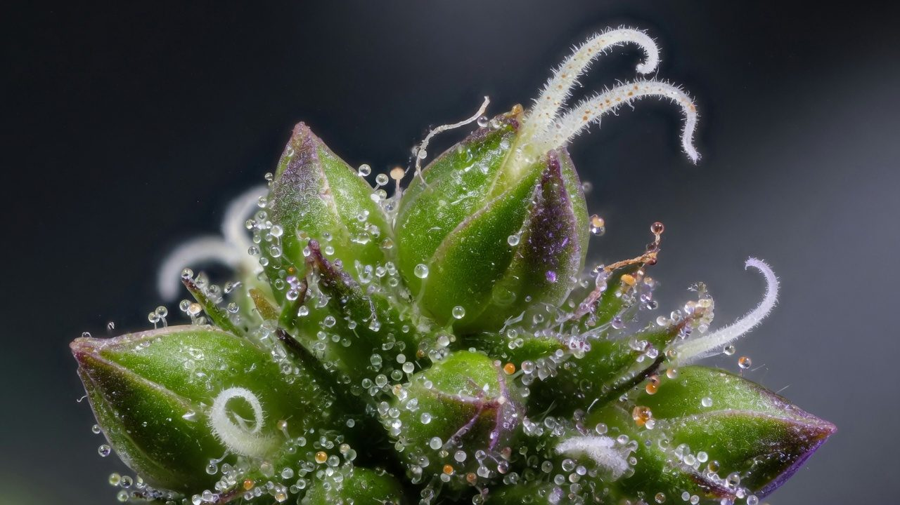
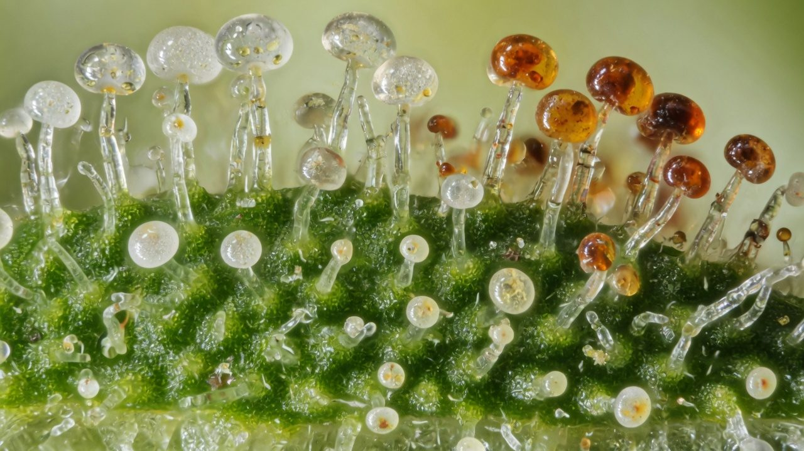
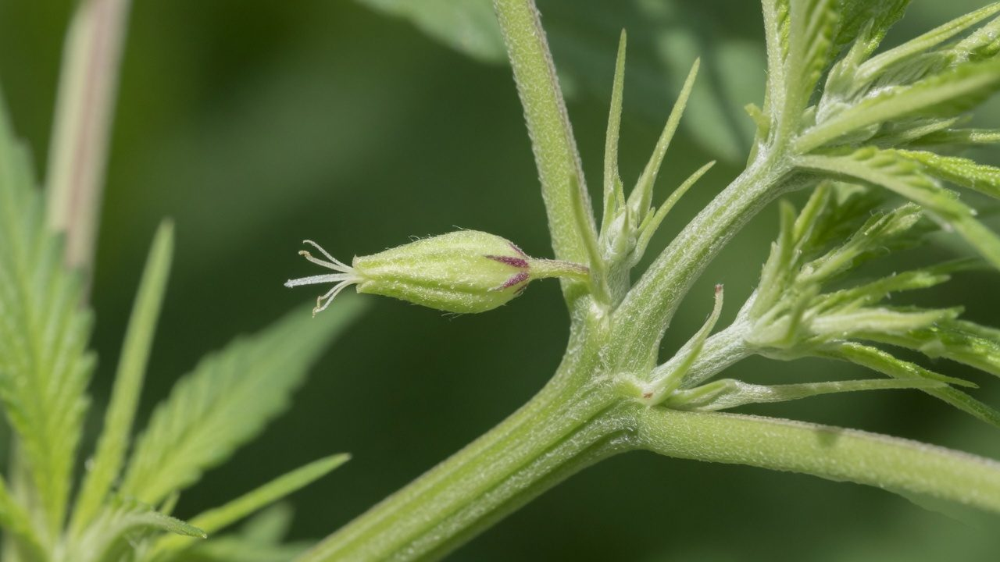
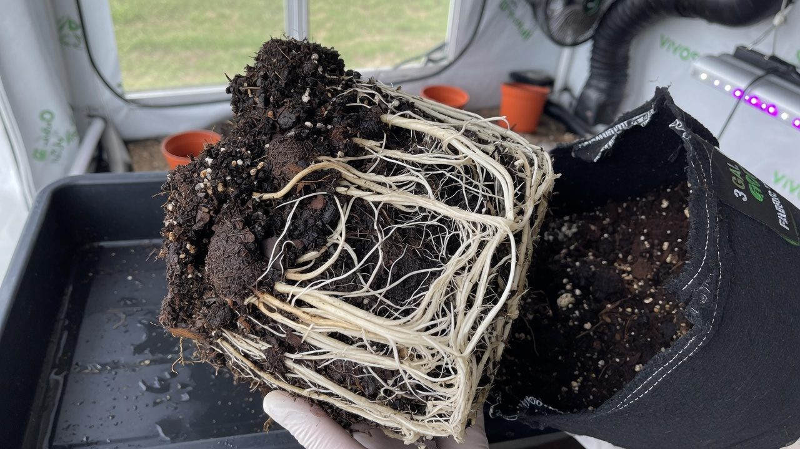

Cannabis plant biology and the life cycle
This paper gives the type of the cannabis plant, the name of each part and the mechanisms in the plant. It also gives information about the life cycle, the effect of night length on flowering, sex and hermaphroditism, photosynthesis, roots and hormones. After you read this paper, you know the names of the structures that you control and the mechanism of the dark period. You can also use the references to mechanisms in all other papers on this site.
Purpose and scope
The other papers on this site use the terms node, dark period and trichome. They do not give the definitions of these terms or the function of each structure. This paper gives the definitions and the functions. It is the reference paper for the site. It gives information about each part of the plant and each stage of the life cycle. It also gives the mechanisms in the plant, and the information is easy to read.
It is not necessary to know biology before you read this paper. This paper gives the definition of each term where the term first occurs. At the end of the paper, a reference table contains all the terms. Read the paper one time from the start to the end before your first crop. Then, when you do not know a term or a mechanism in a different paper, read this paper again.
This paper gives the biology and the causes of the effects for germination, flowering, light and training. A different paper gives full information on each of these items. Use seeds and germination for the germination of seeds. Use flower week by week for each week of flowering. Use basic lighting for the lighting equipment. Use defoliation and training to change the shape of the plant.
This paper is for a person who starts a cannabis crop. It is also for a person who has a crop in progress. This person frequently reads terms such as bract, internode, phytochrome or sink in other papers. This paper gives the correct definition of each term, with sources.
Evidence and limitations
We want each paper to be correct. Thus we examine each paper for information that is not solid. This information comes from the view of one grower, from a small number of sources, or from grower methods that have no controlled test. We identify this information, and we do not show it as solid.
Frequently there is no paper for the decision that you must make. Then we use the reports of other growers and the methods that work in the rooms that we know. This information can help you, but it is not the result of a laboratory test. Use the methods that work for your plants, for your room and for your meters. If a table does not agree with your crop, use the data from your crop and record the difference.
- The primary definitions and the units of measurement in the paper
- Safety limits that have a citation to a regulation or a specification
- Target ranges for light, climate and feed in each stage. They are start values that you can change.
- SOPs that work in many rooms, but you must adjust them for your genetics and meters
- A number for yield or potency that you will always get, with no test at many sites
- Controller setpoints from a different facility, with no new calibration
If you find an error, make a report. We will correct it. Make the report on GitHub, with the name of the paper and the information that is incorrect. If you have a source, include it: Make a report of an accuracy problem. The regulations, labels and licenses of your area always override each procedure in these papers. The label weak in a paper shows the points where the risk of an error is highest.
Cannabis growth form and taxonomy
Cannabis sativa L. is a flowering herb in the family Cannabaceae. This family is small, and hops is also in the family. The plant is annual, usually dioecious and wind-pollinated. It completes its life in one season. The male flowers and the female flowers are on different plants, and the wind moves the pollen.[1][2]
Each of these facts has an effect in the grow room:
- Annual: the plant has only one life cycle in a season. It cannot start the life cycle again in the same season. In a grow room, you make the seasons again with a light timer. Thus the light cycle is very important.
- Dioecious: approximately half of the regular seeds become male plants. You must find these plants and remove them. A female plant without pollination (sinsemilla) uses its energy to make resin and not to make seed.
- Wind-pollinated: the wind moves the pollen. The pollen is in the air in a large quantity, and it moves easily. One male plant that releases pollen can make seed in all the female flowers in a room. A female plant that makes anthers because of stress can do the same. Pollen also moves on clothing and with the airflow between rooms.
- Short-day: a continuous dark period is the trigger for flowering. Thus the control of the light is the control of the trigger mechanism.
The four facts are: the plant is annual, dioecious and wind-pollinated, and the night length is the trigger for flowering. Nearly all important procedures in cultivation have one of these four facts as the cause. For example, growers remove the male plants immediately, prevent all light leaks in the dark period, and schedule the full cycle before they start.
Sativa, indica and ruderalis classification
Many persons think that there are two or three types of cannabis. In this classification, sativa plants have a large height and a low foliage density, and they give a stimulant effect. Indica plants have a small height and a high foliage density, and they give a sedative effect. Ruderalis plants are very small and make flowers with no light trigger. The labels are short names for the growth form, and growers use them. As a classification in biology, the labels are not correct, and they are less correct for the effect on a person.
Most taxonomists think that cannabis is one species with very large variation: Cannabis sativa L. For many thousand years, persons selected cannabis plants for fiber, seed and resin. This selection caused the large variation. The difference between hemp and drug cannabis is a limit for THC in the regulations. It is not a clear difference in biology.[1]
The taxonomy also does not agree with the labels sativa and indica. In the taxonomy, almost all drug cannabis is in one subspecies (C. sativa subsp. indica). This includes all cannabis with the label sativa and all cannabis with the label indica. The labels agree only in part with two groups of lineages of drug cannabis: the narrow-leaflet drug group and the broad-leaflet drug group. The name 'ruderalis' is for feral populations in the north with a short season. Not all taxonomists accept the name 'ruderalis' for a species.[2]
Genomics gave a clear result for growers. A test in 2021 examined the genes of more than 100 commercial samples at approximately 100,000 genetic markers. The test found no difference in the full genome between the samples with the label sativa and the samples with the label indica. The labels agreed only with a small number of aroma terpenes, and variation in the terpene synthase genes controls these terpenes. Thus the label gives weak information about the aroma, but not about the lineage or the pharmacology.[3]
| Many persons think that | Result | Data |
|---|---|---|
| Sativa gives a stimulant effect and indica gives a sedative effect | Weak | There is no difference in the genetics of the groups with different labels. The dose of cannabinoids, the terpene profile, the person and the conditions in which the person uses cannabis cause the effects.[3] |
| The shape of the leaf tells you the effect on a person | No | The width of the leaflet shows the lineage and the climate of the area where the lineage started. It does not show the pharmacology.[2] |
| Indica and sativa are different species | Mostly no. The data do not give a clear result. | Most taxonomists think that cannabis is one species with large variation and with subspecies. Crossing for a very long time also mixed the gene pools.[1] |
| Ruderalis is the parent of the autoflower cultivars | Yes, in general | Feral populations with a short season are day-neutral. Breeders added this trait to the new autoflower cultivars.[11] |
| The name of the cultivar tells you the properties of the plant | Not accurate | No regulation controls the names. Different suppliers can use the same name for plants with different genetics. Use COAs and your records.[3] |
Use the chemotype (COA numbers) when you get cultivars or do breeding. Also use the recorded properties of the cultivar (stretch, flowering time, mold tolerance) and your crop records. You can continue to use the labels 'sativa' and 'indica' as approximate names for the shape of the plant. Do not use them for more than this.
Plant anatomy
The plant makes the same group of parts again and again along the stem. The group has a stem segment, a node with leaves, and a dormant growing tip. The growing tip is in the angle between the leaf stalk and the stem. When you know these parts, you can examine each plant in each room.
The meristems use the energy of the plant for growth. Usually, apical dominance keeps the axillary buds dormant. Each training method sends the energy to the meristems that you want. Topping, low-stress training (LST) and the work with a trellis are methods of training (see the defoliation and training paper). Section 14 gives the hormone mechanisms.
The leaves show the maturity of the plant. The first leaves of a seedling have one leaflet. The next leaves have three leaflets and then five leaflets. After that, a fan leaf has seven leaflets or more.[4]
The positions of the leaves also show the maturity. A new plant has opposite leaves in pairs. When the plant is near flowering, it changes to alternate leaves (one leaf at each node). You can see this change, and it is a sign that the shoot changes to flowering.[5]
Leaves release water through very small pores on their surface all the time. This movement of water out of the leaves is transpiration, and you cannot see it. Transpiration pulls water up from the roots through the stem.
The stem connects the shoot to the roots. The xylem moves water and minerals up from the roots, and transpiration causes this movement. The phloem moves sugar from the leaves to each part of the plant that uses it. Section 12 uses this model of two pipes for photosynthesis and for sources and sinks.
A plant from seed makes a taproot with lateral roots on it. A cutting with roots does not make a taproot. It makes a mass of fibrous adventitious roots at the end of the stem that you cut (see the cloning paper). The two types of root system are good for the plant. A clone has roots that are less deep, and the bottom of the clone dries more quickly.

Flower anatomy
One female cannabis flower is very small and easy to identify incorrectly. It has one small ovary in a pod that has the shape of a leaf and that has a layer of resin. Two white hairs are on the top of the pod. A bud is a very large number of these flowers along a stem axis, with small sugar leaves between them.[5]
The function of the stigmas shows how sinsemilla occurs. When pollen touches a stigma, the ovary becomes larger and becomes a seed. Then the plant uses its energy to fill the seed, and it uses less energy for the resin and for the flowers.
Make sure that no male plant and no anther is in the room. Then the female plants have no pollination, and they make more bracts and more resin. This flower without seeds is sinsemilla, and it is all of the commercial product.
Male flowers have a different structure for a different function. A male flower has five small tepals and five stamens that hang down. The stamens release pollen into the airflow.
The flowers are in loose panicles, and they have almost no trichomes. The female flowers have many trichomes. The male flowers open, release pollen for some days, and die. In evolution, their only function is to fill the air with pollen.[1]
If you do not do breeding, find the male plants before a flower opens (section 10). Then remove them. One male plant in flower releases many million pollen grains into the air. The HVAC system moves them in the room.

Trichome anatomy and function
Glandular trichomes make and keep the compounds that make the flower a commercial product: THC, CBD and the aroma terpenes. Glandular trichomes are very small mushroom-shaped glands on the surface of the flower. The cannabinoids are not in all of the bud. They are in a resin reservoir in each gland head. The reservoir is between the secretory cells and the wax cap.[6]
The types are not different groups. When the maturity of the flower increases, glands that have the shape of capitate-sessile glands change to capitate-stalked glands. The head moves up on a new stalk, and the secretory disc has more cells (eight in sessile heads and 12 to 16 in stalked heads). The output of the glands also changes with the maturity. This change in the output is one cause of the change in the quality of the product with the harvest time. The harvest time changes the quality and not only the potency.[6]
The structure of the glands has two effects. First, the gland heads change color with time. They are transparent, then milky, then amber. This color is the signal for the harvest time, and flower week by week gives full information on this signal.
Second, the heads are on stalks that break easily. After harvest, the quantity of resin on the flower decreases if the flower falls. It also decreases if you do not touch the flower carefully, or if you touch it with a warm hand. Thus all the procedures for drying, trimming and the work with hash (see hash rosin) use a low temperature and a careful touch.
A loupe (60x) for NZ$15 gives you data on the trichomes: the type, the density, the color and the damage. It is the instrument with the lowest cost in cultivation.
Cannabis life cycle
Cannabis is monocarpic: the plant makes flowers one time, with all of its reserves, and then dies. At harvest, you stop the senescence of the plant at the time that is best for the product. The stages below are one continuous sequence. Each stage gives the conditions at the start of the next stage.[4]
- 1Germination (approximately 3 to 7 days)The seed absorbs water, and its metabolism starts. The radicle (the root of the embryo) moves through the seed coat first. Then it moves down because of gravity. The reserves in the seed supply all the energy. The seeds and germination paper gives full information on the method.
- 2Seedling (weeks 1 to 3)The two circular cotyledons (seed leaves) open. The plant makes the first true leaves. They have a serrated edge, and they have one leaflet at first, then three, then five. Below the substrate, the most important task is to make roots. Above the substrate, too much water and damping-off can cause damage to the plant.[4]
- 3Vegetative (from approximately week 3, for the time that you select)The plant makes its structure: nodes, leaf area and root mass. These parts become larger while long days prevent flowering. The maturity of the plant also increases. At first, a new plant cannot make flowers. Thus a cutting or a seedling must have some weeks of vegetative growth. Then the change of the light cycle from long days to long nights gives a clear result.[4]
- 4Pre-flower and transition (1 to 2 weeks)With age, the plant makes one small flower at each node, also when the days are long. These flowers show the sex of the plant and that the plant can make flowers. After the change of the light cycle to long nights, the shoot tips make flower clusters with a high density. They stop the production of leaves. The plant has a strong stretch during this change.[5]
- 5Flowering (7 to 10 weeks for most cultivars)The parts of this stage are stretch, bud set, bulking and ripening. The buds become the primary sink for sugar (section 12). The stigmas and the trichomes show the maturity. The flower week by week paper gives full information on each week.
- 6Senescence (the last stage)The genetics of the plant set the sequence of senescence. It is not a disease. The plant moves nitrogen from the fan leaves to the flowers, and thus the lower leaves become yellow and fall. The maturity of the resin increases. A plant with pollination completes its seed in a short time, and its senescence is faster. Then the plant dies, or you harvest it.
Autoflower cultivars have a shorter sequence of stages, and the light cycle does not change this sequence. Section 09 gives information on these cultivars. The difference is in the genetics and not in the tasks of the grower.
Photoperiodism and flowering
The plant measures the length of each dark period with a pigment. The pigment is phytochrome, and light changes it. Phytochrome has two types: Pr (not active) and Pfr (active). Red light (approximately 660 nm) changes Pr to Pfr immediately. Far-red light (approximately 730 nm) changes Pfr to Pr. In darkness, Pfr also changes to Pr, but slowly, during some hours.
Daylight has much red light. Thus the quantity of Pfr stays high during the day, and it is a chemical signal that the lights are on. During the night, the quantity of Pfr decreases slowly. After many hours of continuous darkness, the quantity of Pfr is less than the value that starts the flowering signal.[7]
The slow decrease of Pfr in darkness is the timer. A short-day plant such as cannabis is a long-night plant. The plant starts flowering when the continuous dark period is longer than the critical night length, night after night.
A standard test is night interruption: a short period of light in the middle of a long night. Then the night is not long for the plant, and the plant stays vegetative. Thus growers must prevent light leaks in flowering rooms. In a room for mother plants, do not let a long night occur. Then the plants stay vegetative.[7]
Controlled tests show that the change from vegetative growth to flowering is sudden. Cannabis plantlets in vitro made flowers with a photoperiod of 12 h, but they stayed vegetative when the period of light was longer. A small change in the night length gives a clear change in the result.[8]
But 12/12 is a safe standard value, and it is not necessary in biology. A test with ten cultivars in grow rooms showed that most of them made flowers correctly with a 13 h day. Some of the cultivars had a higher yield because of the longer light period.[9] We recommend that you do this test for each cultivar when the genetics of the cultivar are stable. Do not think that the result is the same for all cultivars.
There are two more items. First, the full mechanism is more than the change between Pr and Pfr. Phytochrome gives signals to a circadian clock. The clock controls the production of a signal for flowering that moves in the plant: florigen, the FT protein. The leaves make florigen, and it goes to the shoot tips. Thus all parts of the plant start flowering at the same time.[7]
Second, light with a wavelength longer than red light also has an effect. In a test, near-infrared light with a high intensity (approximately 850 nm) increased the time until flowering by 12 days. The cause is that phytochrome also absorbs light with a wavelength of more than 700 nm. A typical illuminator of a security camera has a low intensity, and it is some meters from the canopy. Its effect is very small. But do not put IR lamps with a high intensity above flowering plants.[10]
Go into the flowering room when the lights are off. Wait 10 minutes in darkness. Then examine the room for light leaks. Put tape on the LEDs of the equipment.
Seal the door frames. Examine the ducts for small holes. Light leaks that occur again and again increase the time until flowering and decrease the quality of the flowers. They are also one of the stress inputs that cause hermaphroditism (section 11).[13]
Autoflower and ruderalis traits
In the far north, feral cannabis populations had summers with almost no night. Many persons use the name Cannabis ruderalis for these populations, but taxonomists do not all accept this species. A plant that waits for long nights there dies in the frost without pollination. Thus, in evolution, these populations became day-neutral. The plants make flowers with age, and the photoperiod does not change this.[1][2]
Breeders added this trait to new cultivars of drug cannabis. Tests show the genetics of the trait. The autoflower trait is recessive, and one primary locus controls it (Autoflower1). Tests also show other day-neutral loci and loci for a short time until flowering. The candidate genes are in the pathway of the plant clock and flowering.
The recessive trait has an important effect when you do breeding. If you make a cross of an autoflower with a photoperiod plant, the offspring are photoperiod plants. The trait does not show unless the two parents have it.[11]
With autoflowers, you can use different light cycles and you get a short calendar. You can use 18 to 24 h of light each day from seed to harvest. You do not have to prevent light leaks for the trigger. The calendar is approximately 10 to 12 weeks from seed to harvest.
You also have less control. You cannot hold an autoflower in the vegetative stage. You cannot keep one as a mother plant. You cannot make the plant vegetative again to correct an error. The internal clock only counts forward.
Stress can add one week to the time of a photoperiod plant. The same stress removes a part of the life span of an autoflower, because the genetics set the life span.
| Photoperiod cultivar | Autoflower cultivar | |
|---|---|---|
| Flowering trigger | Long continuous nights (the change to 12/12) | Internal clock for the age of the plant. Flowering starts with all light cycles.[11] |
| Length of the vegetative stage | You select the length, from days to years | The genetics set the length: approximately 3 to 4 weeks |
| Mother plants / cloning | Standard procedure | A clone has the same age clock as the plant that supplied the cutting. Thus the clone cannot stay in the vegetative stage. |
| Light leaks in the flowering stage | Dangerous. The time until flowering increases. The plant can change to vegetative growth again. Hermaphrodites can occur. | No effect on the trigger (stress continues to be important) |
| After stress | You can increase the length of the vegetative stage, and the plant can be vegetative again | You cannot stop the clock. The damage is permanent. |
| Typical length of the crop | Vegetative stage (you select) + 7 to 10 weeks of flowering | Approximately 10 to 12 weeks in total, from seed to harvest |

Sex determination and pre-flower identification
Cannabis has sex chromosomes. Plants do not frequently have sex chromosomes. Female plants are XX and male plants are XY. A male plant has two different sex chromosomes, the same as a person. The X is the largest chromosome in the set, and the Y is larger than each autosome. Fertilization sets the sex of the plant, and the growth conditions do not set it.[12]
Thus the ratio of male plants to female plants in regular seed is approximately 50:50. In each crop from regular seed, you must find the sex of each plant. Find the male plants. Remove them before a flower opens.
The plant shows its sex before the change of the light cycle. With age, the plant makes small pre-flowers, one at each of the nodes at the top of the plant, in the leaf axils. Long days do not prevent this, and a trigger is not necessary. This occurs typically from approximately week 3 to 4 of the vegetative stage.[5]
At first, use a loupe to examine the pre-flowers. A female plant has a pod with a sharp point and two white stigmas. A male plant has small pollen sacs with a circular shape on a short stalk, and it has no hairs.
The stipules are thin green spikes at each node. They are on the two sexes, and they do not show the sex of the plant. Many growers identify them incorrectly the first time.
If you cannot find the sex of a plant, wait. Or give the plant 12/12 for a short period, and the plant shows its sex. You can also prevent this task with feminized seed (see the next section). For breeding, keep the male plants in a room where the air does not go to the other rooms. Section 05 gives a warning: pollen is the only contaminant that you cannot remove after it is in the air.
Hermaphrodites, stress and feminized seed
The chromosomes set the sex of the plant, but the expression of the sex can change. A plant with female chromosomes can make male anthers that make pollen. It can make mixed male flowers, or an exposed anther on a female flower.
A trait in the genetics of some cultivars is one recorded cause. Other recorded causes are stress, light leaks, a photoperiod that is not correct, heat and damage to the plant. A harvest a very long time after ripeness is also a cause. In commercial rooms, hermaphroditism makes viable pollen and seed that you do not want, with no male plant in the room.[13]
There is a problem in the genetics. Seed from the pollen of a hermaphrodite on a female plant has no Y chromosome. Thus the offspring are female plants. This seed is feminized seed that you did not want. In a test, seed from hermaphrodites had a germination rate of 90 to 95% and made female progeny.
But this seed is a result of self-pollination. The variation in the genetics is low. Self-pollination can also select for the trait of hermaphroditism. Do not make a seed bank with seed from plants that have stress.[13]
Feminized seed uses the same mechanism, but with chemistry and not with stress. Ethylene is a plant hormone, and it causes the expression of female flowers. If you stop the ethylene signal, a plant with female chromosomes makes viable male flowers. The standard method uses STS (silver thiosulfate). You apply a spray on the leaves of a female plant that you select, again and again.
The spray causes pollen that has only X chromosomes. You put this pollen on a different female plant. Almost all of the seed that results is female. A spray of gibberellin can also cause male flowers, but the result is not as good. Use the plants that you spray only for breeding, and not as product.[14]
Do the same for an exposed anther as for a male plant in the room. Isolate the plant or remove it. Record the cultivar and the stress that occurred before the anther. Examine the plants near it each day for one week. Anthers can cause seed in the plant that made them and in all plants in the direction of the airflow.[13]
Photosynthesis: light, CO2 and temperature
The leaves use light and air to make sugar. All other parts of the plant use this sugar. This mechanism is photosynthesis. The chloroplasts in the leaves use the energy of light to divide water molecules and to attach CO2 from the air to molecules of sugar.
The mechanism has a maximum rate. More light increases the rate up to a limit. If you add CO2, the limit increases.
Sugar is the only supply for the growth of the plant. The plant uses sugar to make each gram of root, leaf and flower. Light supplies the energy. CO2 supplies the carbon. The temperature sets the speed of the enzymes.
Light, CO2 and temperature all control the same mechanism, photosynthesis. Thus each of the three sets a limit for the other two. Standard tests of gas exchange on cannabis leaves showed that photosynthesis increases with the light intensity up to approximately 1500 µmol/m²/s at approximately 30 °C (86 °F). Photosynthesis increased more when the concentration of CO2 increased up to 750 ppm. When you increase one input, the next input becomes the limit.[15]
Thus in CO2 enrichment, high light, a high concentration of CO2 and a high temperature must increase together, or not at all. The numbers for one leaf of one cultivar show the shape of the curve. They are not a setpoint. Full canopies, different cultivars and VPD change the curve (see grow room systems).
The second half of the mechanism is the movement of the sugar. Mature leaves are sources: they send more sugar to other parts than they receive. All other parts of the plant use the sugar from the leaves. Growing tips, roots and, most of all, flowers are sinks: they receive more sugar from other parts than they send.
The phloem sends the sugar to the parts that use the most sugar. These parts change with the stage of the life cycle. In the vegetative stage, new leaves and roots use the most sugar. After the change of the light cycle, the flowers are the primary sink, and all other parts receive sugar after the flowers.
You use this model each day. Fan leaves in good condition make the sugar for the plant. Thus you keep them until the last stage of flowering. Defoliation removes the leaves in shade that do not make sugar. It does not remove the leaves with good light.
In the last stage of the cycle, the leaves frequently become yellow because the plant moves the nutrients out of them, at the correct time. A yellow leaf at this stage is frequently not a deficiency. Do not try to correct it.

Root systems
Half of the plant is below the substrate, and you cannot see it. Most problems of a new grower start there. A plant from seed has a taproot with lateral roots on it. A cutting does not make a taproot. It makes a mass of fibrous adventitious roots.
In each type of root system, the surface that absorbs the water is not the thick white roots that you see at transplant. The surface is the root hairs immediately behind the growing tips of the roots. The root hairs break easily and live a short time. The plant makes new root hairs all the time as the roots become longer.
Roots use oxygen. They do not photosynthesize. Their respiration is continuous, and they use sugar that the phloem sends down from the leaves. Respiration uses O2 from the spaces for air in the substrate. If water fills these spaces, problems start in some hours.
The uptake of water and nutrients decreases, the plant shows wilt when it is in water, and the root tissue starts to die. Opportunist pathogens such as pythium then cause infection in the damaged tissue.[16] This mechanism causes a frequent error of new growers. A plant with too much water and a plant with not sufficient water look the same above the substrate. The plant with not sufficient water has water stress. The roots of the plant with too much water have no oxygen.
The correction is in the system and not in the tasks of the grower. The manufacturer makes a substrate with the correct ratio of air to water (see substrates compared for the air-filled porosity). Apply water when the weight of the pot or the measured dryback shows that it is necessary. Do not use the calendar. Crop steering uses this method (see coco and crop steering).
The rhizosphere is the zone of some millimeters around each root. Roots release sugars and acids into the rhizosphere. A group of microbes with a high density uses these sugars and acids. The microbes are part of the nutrient cycle, and they use the space that pathogens want.
The chemistry of the rhizosphere is different from the chemistry of the substrate that is far from the roots. The pH at the root surface changes with the nutrients that the plant absorbs. Thus the runoff that you measure does not agree fully with the conditions at the roots (see pH control).
Use these data: the weight of the pot and the dryback rate. Also use the runoff EC and pH, and the root color at transplant. White roots with branches are good. Brown roots that are soft or that have a bad aroma show an oxygen problem. The roots give you data each day with instruments and not with your eyes.
Plant hormones
Five families of hormones cause most of the effects in a cannabis plant. They also cause most of the effects of the work of the grower. Each training method changes the hormones with tools that cut the plant and with timers. Each rooting gel and each spray to make feminized seed changes the hormones with chemical compounds.
| Hormone | Primary source | Function | How growers use it |
|---|---|---|---|
| Auxin | Shoot tips (apical meristem) | Causes apical dominance: the tip stops the growth of the axillary buds below it. At a high local concentration, auxin starts root initiation. | Topping removes the source of auxin. The side shoots become larger, and the plant has more branches and more colas. LST makes the gradient of auxin flat and has the same effect, but you do not remove the tip. Rooting gels contain synthetic auxins (IBA and NAA). You apply them to the cuttings. |
| Cytokinin | Root tips | Increases the growth of shoots and the number of branches. Its effect is the opposite of auxin. It decreases the speed of leaf senescence. | The ratio of auxin and cytokinin controls the ratio of shoots and roots. A large root system in good condition sends signals to the top of the plant to make branches. Multiplication in tissue culture uses added cytokinin (see tissue culture). |
| Gibberellin (GA) | New leaves and seeds | Causes the stem to become longer. It helps to stop the dormancy of seeds. | GA causes the stretch after the change of the light cycle. GA is also part of the cause of long internodes when plants are near each other or in shade, because shade changes the light quality. A spray of GA can cause male flowers for breeding, but STS gives a better result.[14] |
| Ethylene | Tissue with stress, damaged tissue and tissue in ripening | A hormone that is a gas. It causes senescence and ripening, and it causes the expression of female flowers. | If you stop ethylene with STS, a female plant makes male flowers. Feminized seed production uses this effect (section 11). Ethylene is also a stress signal. Thus damage and rough touch have an effect in all parts of the plant.[14] |
| ABA (abscisic acid) | Roots and leaves with water stress | In drought, ABA closes the stomata, decreases the rate of growth, and causes the dormancy of seeds | Controlled drybacks use the ABA signal. The ABA signal is part of the mechanism that crop steering uses to cause generative growth. If the dryback is too large, the same hormone stops growth fully. |
The effect of a hormone changes with its concentration and with its ratio to other hormones. The concentration and the ratio are different in each tissue. Thus topping releases from apical dominance only the nearest nodes below the point where you cut the stem. Thus you apply rooting gel to the end of the stem that you cut, and not to the leaves. One cause of stress frequently has more than one effect.
Frequent problems in plant biology
In most problems in cultivation, one of the mechanisms in this paper operates correctly, but the result is not good for you. The six problems below cause damage to many first crops.
Light changes Pr to Pfr, and the timer of the night starts again. Flowering stops, the plants change to vegetative growth again, and the stress increases the risk of hermaphrodites. Correction: let your eyes adapt to the darkness. Go into the room when the lights are off. Put tape on the LEDs. Seal the doors.[7]
A sudden high temperature, light leaks in the dark period, and damage cause plants with female chromosomes to make anthers. The anthers can cause seed in all the room. Correction: keep a stable climate. Prevent light leaks in the dark period. Remove the cultivars that frequently make hermaphrodites.[13]
When water fills the substrate, the roots have no oxygen, and uptake stops in some hours. From above the substrate, the signs are the same as for a plant with not sufficient water. Thus a new grower applies water again. Correction: use the weight of the pot and the dryback to find the time to apply water. Do not use wilt only.[16]
One open male flower or one exposed anther is sufficient. The plant is wind-pollinated, and the HVAC system moves the pollen. The result is a crop with seed. Correction: find the sex of each plant at the nodes before flowering. Remove the male plants before flowers open. Keep all plants for breeding in quarantine.[13]
Topping and much training in flowering use the reserves of the plant to repair the damage, while the buds wait for sugar. Correction: change the shape of the plant in the vegetative stage. From bud set, the meristems that you want make flowers and not structure.
If you get a cultivar because of a label such as 'an indica with a sedative effect', you get only a label. The labels do not show a difference in the genetics, and they give weak information about the aroma. Correction: use the chemotype and the COA numbers, the data sheets of the cultivar, and your records.[3]
Plant biology reference table
The table gives the terms that this site uses, one row for each term. Make a bookmark for this section, because all other papers use these terms with no definition.
| Term | Definition | Effect in cultivation |
|---|---|---|
| Annual | The plant completes its life in one season, makes flowers one time and dies | The plant cannot start again in the season. Schedule the full cycle. |
| Dioecious | The male and the female are different plants | Regular seed: approximately half of the plants are male. Find them and remove them. |
| Chemotype | Classification with the measured chemistry (THC:CBD) | Gives better information on the product than the labels sativa and indica |
| Node / internode | Joint on the stem / part of the stem between joints | The distance between nodes shows the stretch. Each branch and each bud starts at a node. |
| Apical meristem | The primary growing tip | Topping removes it, and the side shoots become larger |
| Axillary bud | Dormant reserve growing tip at each node | Each branch starts from it, and training methods use it |
| Fan leaf and sugar leaf | Large leaves that absorb light / small leaves in the bud | Fan leaves supply the sugar for the plant. Trimming removes the sugar leaves. |
| Bract | Pod with a high density of resin around each ovary (growers use the term 'calyx') | Highest trichome density on the plant |
| Pistil / stigma | Female organ / its two white hairs | The color of the stigma shows the approximate maturity |
| Trichome | Gland that makes resin (bulbous, sessile or stalked) | Makes and keeps cannabinoids and terpenes |
| Photoperiod | The length of the period of light each day (the light cycle) | The control that starts flowering and keeps it |
| Critical night length | Minimum continuous darkness that starts flowering | The 12/12 cycle gives more darkness than this limit. A light leak stops the dark period. |
| Phytochrome (Pr and Pfr) | The pigment that changes between red light and far-red light | The sensor for all photoperiod effects |
| Autoflower | Cultivar that makes flowers with age and not with the photoperiod | A different type of crop: fast, with all light cycles, and with less control |
| Pre-flower | The first flower at a node | Shows the sex of the plant some weeks before flowering |
| Hermaphrodite | Female plant that makes male anthers because of stress or genetics | A source of pollen when no male plant is in the room |
| STS | Silver thiosulfate. It stops the ethylene signal | The method to make feminized seed |
| Source / sink | Tissue that sends sugar / tissue that receives sugar | The mechanism for defoliation and for yellow leaves in the last stage of flowering |
| Rhizosphere | The zone of some millimeters around each root | pH, microbes and uptake occur in this zone |
A cannabis plant makes sugar, and a clock for the night controls the plant. The vegetative stage makes the structure: leaves, roots and nodes. The long night changes the plant, and the flowers become the only sink for sugar. Hormones are the controls of the plant, and trichomes are the product. You control the roots, which are half of the plant, with instruments. Each procedure in the other papers has one of these facts as the cause.
Next, follow the sequence of the life cycle of the plant. Use seeds and germination to start a plant. Use flower week by week for each week of flowering. Use basic lighting for the equipment for the photoperiod.
References
- Small, E. (2015). Evolution and Classification of Cannabis sativa (Marijuana, Hemp) in Relation to Human Utilization. The Botanical Review, 81(3), 189-294. https://doi.org/10.1007/s12229-015-9157-3 https://link.springer.com/article/10.1007/s12229-015-9157-3
- McPartland, J. M. (2018). Cannabis Systematics at the Levels of Family, Genus, and Species. Cannabis and Cannabinoid Research, 3(1), 203-212. https://doi.org/10.1089/can.2018.0039 https://www.ncbi.nlm.nih.gov/pmc/articles/PMC6225593/
- Watts, S., McElroy, M., Migicovsky, Z., Maassen, H., van Velzen, R., & Myles, S. (2021). Cannabis labelling is associated with genetic variation in terpene synthase genes. Nature Plants, 7(10), 1330-1334. https://doi.org/10.1038/s41477-021-01003-y https://www.nature.com/articles/s41477-021-01003-y
- Hesami M, Pepe M, Jones AMP. Morphological Characterization of Cannabis sativa L. Throughout Its Complete Life Cycle. Plants. 2023;12(20):3646. https://doi.org/10.3390/plants12203646
- Spitzer-Rimon B, Duchin S, Bernstein N, Kamenetsky R. Architecture and Florogenesis in Female Cannabis sativa Plants. Front Plant Sci. 2019;10:350. https://doi.org/10.3389/fpls.2019.00350
- Livingston SJ, Quilichini TD, Booth JK, Wong DCJ, Rensing KH, Laflamme-Yonkman J, Castellarin SD, Bohlmann J, Page JE, Samuels AL. Cannabis glandular trichomes alter morphology and metabolite content during flower maturation. Plant J. 2020;101(1):37-56. https://doi.org/10.1111/tpj.14516
- Legris, M., Ince, Y. Ç., & Fankhauser, C. (2019). Molecular mechanisms underlying phytochrome-controlled morphogenesis in plants. Nature Communications, 10, 5219. https://doi.org/10.1038/s41467-019-13045-0 https://www.nature.com/articles/s41467-019-13045-0
- Moher M, Jones M, Zheng Y. Photoperiodic Response of In Vitro Cannabis sativa Plants. HortScience. 2021;56(1):108-113. https://doi.org/10.21273/HORTSCI15452-20
- Ahrens A, Llewellyn D, Zheng Y. Is Twelve Hours Really the Optimum Photoperiod for Promoting Flowering in Indoor-Grown Cultivars of Cannabis sativa? Plants. 2023;12(14):2605. https://doi.org/10.3390/plants12142605
- Kusuma, P., Westmoreland, F.M., Zhen, S., & Bugbee, B. (2021). Photons from NIR LEDs can delay flowering in short-day soybean and Cannabis: Implications for phytochrome activity. PLOS ONE, 16(7), e0255232. https://doi.org/10.1371/journal.pone.0255232
- Toth, J. A., Stack, G. M., Carlson, C. H., & Smart, L. B. (2022). Identification and mapping of major-effect flowering time loci Autoflower1 and Early1 in Cannabis sativa L. Frontiers in Plant Science, 13, 991680. https://doi.org/10.3389/fpls.2022.991680 https://www.frontiersin.org/journals/plant-science/articles/10.3389/fpls.2022.991680/full
- Divashuk, M. G., Alexandrov, O. S., Razumova, O. V., Kirov, I. V., & Karlov, G. I. (2014). Molecular Cytogenetic Characterization of the Dioecious Cannabis sativa with an XY Chromosome Sex Determination System. PLoS ONE, 9(1), e85118. https://doi.org/10.1371/journal.pone.0085118 https://journals.plos.org/plosone/article?id=10.1371/journal.pone.0085118
- Punja, Z. K., & Holmes, J. E. (2020). Hermaphroditism in Marijuana (Cannabis sativa L.) Inflorescences — Impact on Floral Morphology, Seed Formation, Progeny Sex Ratios, and Genetic Variation. Frontiers in Plant Science, 11, 718. https://doi.org/10.3389/fpls.2020.00718 https://www.frontiersin.org/journals/plant-science/articles/10.3389/fpls.2020.00718/full
- Flajsman, M., Slapnik, M., & Murovec, J. (2021). Production of Feminized Seeds of High CBD Cannabis sativa L. by Manipulation of Sex Expression and Its Application to Breeding. Frontiers in Plant Science, 12, 718092. https://doi.org/10.3389/fpls.2021.718092 https://pmc.ncbi.nlm.nih.gov/articles/PMC8591233/
- Chandra, S., Lata, H., Khan, I. A., & ElSohly, M. A. (2008). Photosynthetic response of Cannabis sativa L. to variations in photosynthetic photon flux densities, temperature and CO2 conditions. Physiology and Molecular Biology of Plants, 14(4), 299-306. https://doi.org/10.1007/s12298-008-0027-x https://link.springer.com/article/10.1007/s12298-008-0027-x
- Morard, P., & Silvestre, J. (1996). Plant injury due to oxygen deficiency in the root environment of soilless culture: A review. Plant and Soil, 184, 243-254. https://doi.org/10.1007/BF00010453 https://link.springer.com/article/10.1007/BF00010453
Each citation in the paper, for example [1], refers to an item in this list. Each item is a primary source or an instruction from an authority, unless the item shows a different type. The results of cannabis tissue culture change much with the genotype. Before you use the dilutions, hormone doses and local regulations, make sure that they agree with the primary sources.